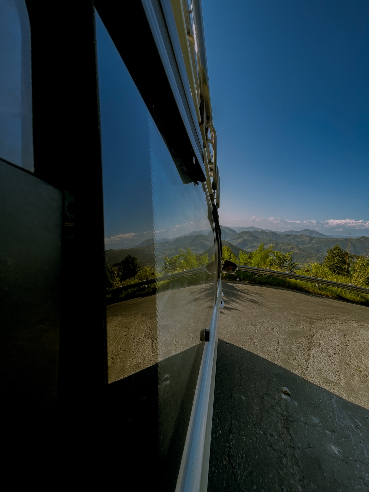

PHOTOGRAPHY · FILM · VISUAL STORIES
RIJANPOUDEL.
01 / A CREATIVE JOURNEY
I don't just take pictures.
I collect perspectives.
I'm Rijan Poudel — an aspiring photographer and video editor exploring light, movement and the stories hidden in everyday moments. This is where I learn, experiment and share what I see.
A little about me ↗02 / THE COLOUR LAB
One frame.
Two moods.
Drag the divider to compare a monochrome reference with a cinematic colour treatment.

ORIGINAL FINAL GRADEDrag the centre handle to reveal the original photograph and its cinematic colour treatment.
INTERACTIVE OBJECT / 3D STUDY
Behind every frame
is a perspective.
Explore an interactive FX3-inspired cinema camera with an attached lens, rotating controls and a hinged rear LCD. Drag to rotate it, then tap the rear monitor to swing it outward. Live preview is optional and only starts after you grant browser permission.
DRAG TO ROTATE · TAP REAR LCD TO FLIP OUT · RESET VIEW BUTTON02 / SELECTED FRAMES
Visual diary.
A collection of portraits, places
and passing moments.
12 photographs
A selection of photographs from my recent creative practice.
THE WAY I SEE IT
Every frame has
a feeling.
03 / BEHIND THE CAMERA
Still learning.
Always creating.
I'm Rijan, a beginner photographer and video editor with a growing passion for visual storytelling. I enjoy capturing natural moments, exploring new places and finding the right mood through editing and colour.
I'm at the beginning of the journey, building my skills one project at a time. Every shoot is a chance to see differently; every edit is a chance to tell a better story.
Say hello ↗04 / MOVING IMAGES
Motion in mind.
A little movement can
say a lot.
Frames in motion.
A short vertical motion edit featuring atmospheric lighting, graphic transitions and a product-style reveal.
05 / WHAT I'M EXPLORING
Creative focus.
Photography
Portraits, places and natural moments.
↗Video editing
Rhythm, storytelling and clean cuts.
↗Colour grading
Finding the right tone and atmosphere.
↗Visual storytelling
Making small moments feel memorable.
↗07 / HAVE A STORY IN MIND?
Let's make
something real.
Share a few details about your project. I'll get back to you using the email you provide.
poudelrijan865@gmail.com ↗